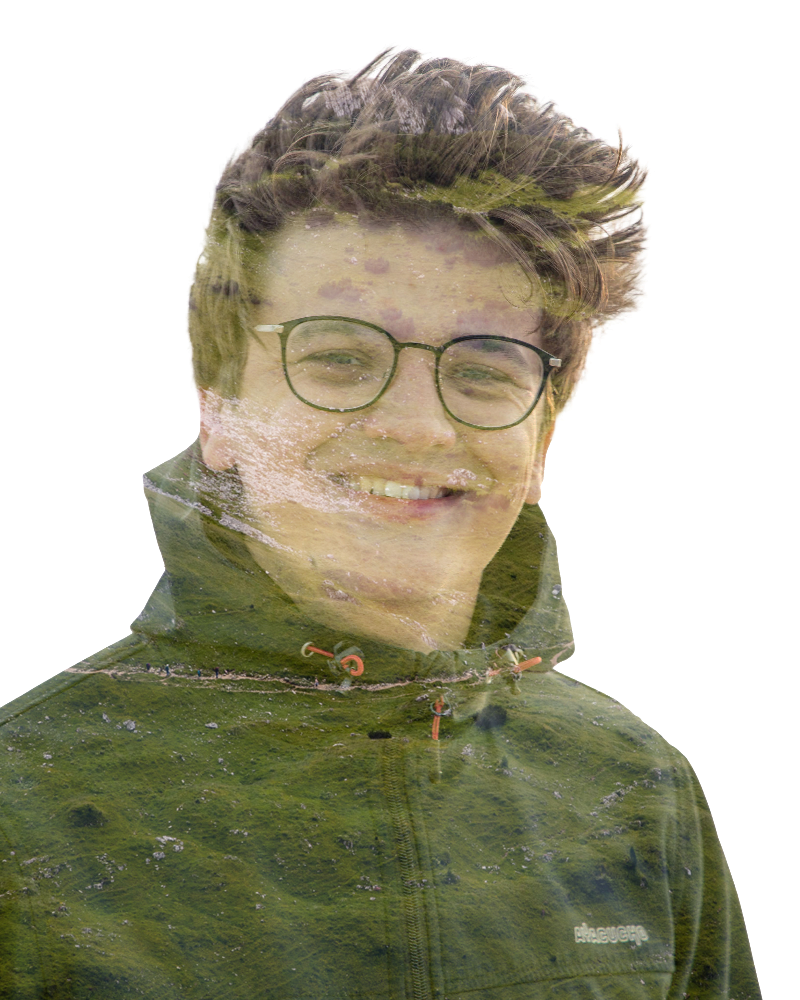

Welkom op mijn lesportaal
Hier verzamel ik alles wat je nodig hebt voor mijn vakken. Van planning tot practica en voorbeeldverslagen: je vindt het op één plek zodat je snel kunt doorpakken.
- Natuurkunde: Planningen, extra opgaven en nakijkmodellen.
- Verslagen: Structuur, eisen en voorbeelden om je verslag strak op te bouwen.
- Informatica: Link naar de Google Site met alle opdrachten en bronnen.